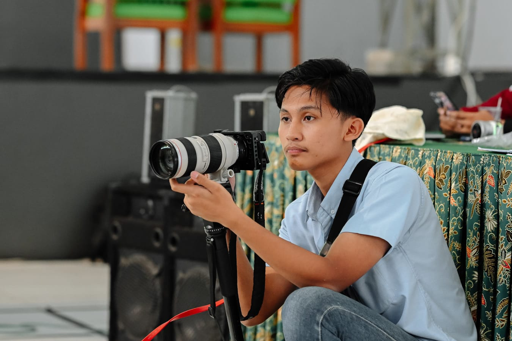

Halo, saya
Mahasiswa D4 Teknik Informatika Politeknik Negeri Jember dengan passion di Software Development, UI/UX Design, dan Creative Media.
Saya adalah mahasiswa D4 Teknik Informatika Politeknik Negeri Jember semester 4 dengan minat pada pengembangan perangkat lunak, UI/UX Design, dan Web Development. Memiliki kemampuan dasar dalam PHP, HTML, CSS, dan Java, serta terus mengembangkan keterampilan melalui berbagai proyek dan pembelajaran mandiri.
Selain itu, saya juga aktif sebagai freelance videografer dengan pengalaman dalam video liputan, livestreaming, serta visual jockey menggunakan vMix, OBS, dan Resolume Arena. Dengan IPK 3,60, saya dikenal disiplin, bertanggung jawab, serta mampu bekerja secara individu maupun tim.
Aplikasi MOKAPOS (Project Based Learning)
Aplikasi E-Konter (Project Based Learning)
Aplikasi posCare (Project Based Learning)
Freelance
D4 Teknik Informatika
2024 – SekarangIPS
2021 – 2023Aplikasi Posyandu Balita — sistem pencatatan data balita, jadwal, dan laporan kesehatan yang terintegrasi antara mobile dan web.
Aplikasi kasir berbasis desktop dengan sistem backend untuk pencatatan penjualan secara real-time dan manajemen transaksi.
Sistem manajemen penjualan konter HP dengan fitur transaksi, manajemen stok, dan pencatatan pelanggan.
Produksi video multicam dan livestreaming untuk acara wisuda Telkom University Surabaya.
Liputan dan livestreaming event Sparkling Nganjuk Carnival dengan setup multi-camera.
TIF Exhibition | Politeknik Negeri Jember
Feb 2026 Sertifikat menyusulPoliteknik Negeri Jember — Skor 65/140 (CEFR A2)
Jun 2025Interactive Thingking: UI/UX in Action | Politeknik Negeri Jember
Jun 2025Politeknik Negeri Jember
Jun 2025Terbuka untuk peluang kolaborasi, proyek freelance, maupun diskusi seputar teknologi dan media kreatif.